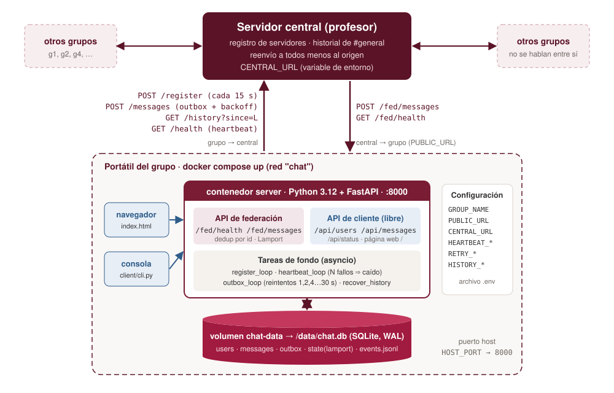
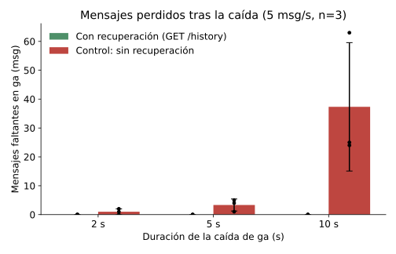
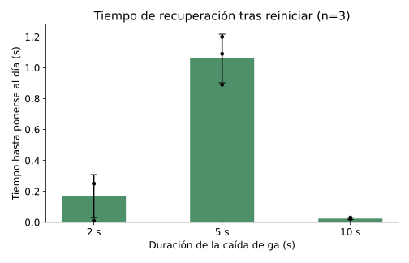

| Caída | Faltantes con recuperación | Faltantes sin recuperación (control) | % perdido (control) | Dup. en pantalla | T. recuperación |
|---|---|---|---|---|---|
| 2 s | 0, 0, 0 | 0, 1, 2 | 1,6 % | 0 | 0,17 ± 0,14 s |
| 5 s | 0, 0, 0 | 4, 1, 5 | 4,4 % | 0 | 1,06 ± 0,16 s |
| 10 s | 0, 0, 0 | 25, 63, 24 | 37,0 % | 0 | 0,02 ± 0,01 s |
| Valores por repetición (n = 3). Tiempo medido desde que ga vuelve a responder hasta tener todos los mensajes enviados durante la caída. 5 msg/s; 1 428 mensajes en total. | |||||